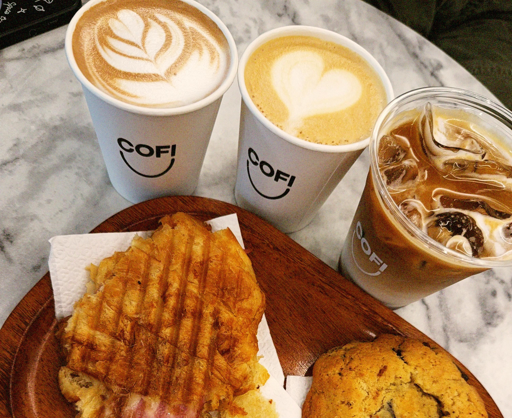
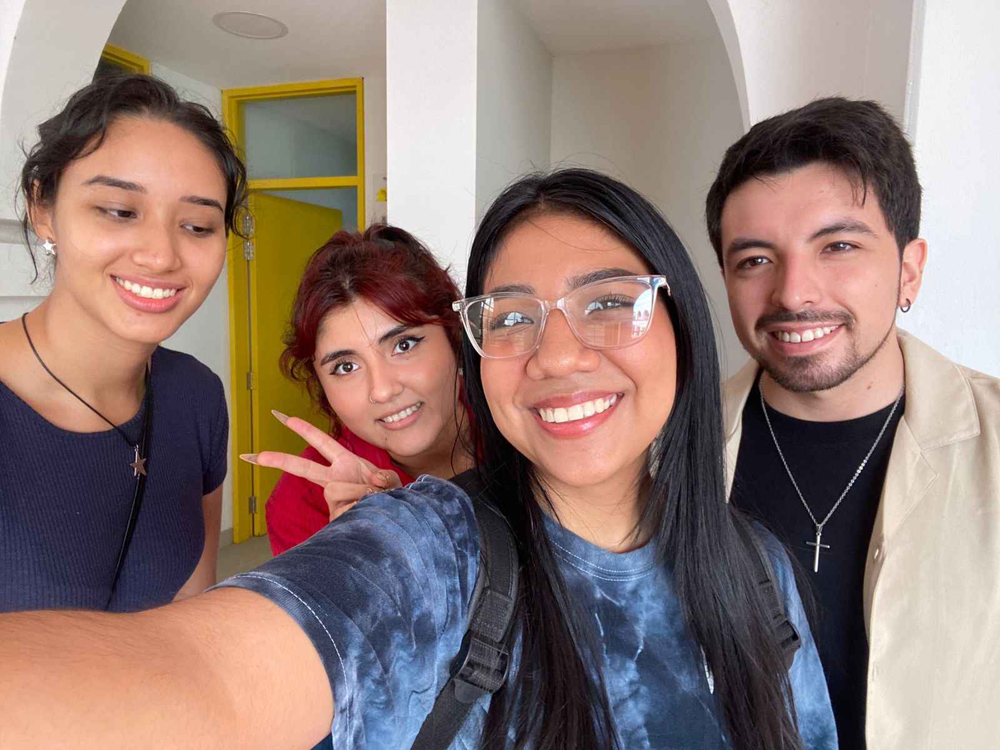

01 Week 1: São Paulo's cold and the decision to return July 1 - 7 July started with an impossible cold in São Paulo. One of those colds that freeze your bones and make you rethink your life decisions. I'm not used to such low temperatures, so when the thermometer showed five degrees, I didn't know what else to wear without ending up sick. The decision One day, while I was complaining for the umpteenth time, my mom said: "Why don't you come back?". That phrase kept bouncing in my head and, after thinking a bit, I said: "Yes, I'm coming back". 💚 That's how I decided to return to Bolivia during the month I had left before my August classes started. The decision ended up being one of the best of the year. Sometimes the body asks for home, and it's okay to listen to that request. As soon as I arrived, my routine completely changed. I think there wasn't a single day when I left home after ten in the morning and came back before ten at night. It seemed like all my friends had agreed to see me. Every day I met with at least four different people. What I realized: I was recovering years of conversations and laughter The physical presence of friends is irreplaceable I had really missed Santa Cruz Going back home sometimes is exactly what we need ✦ 02 Week 2: Coffee, reunions and real laughter July 8 - 14 One of my great allies this month was Coffee, the café in Santa Cruz where a coffee and a croissant cost little but brighten your day as if they cost triple. I spent so many hours there that I think I could describe the menu by heart. It was the perfect meeting point: comfortable, affordable, and with that smell of freshly baked bread that hugs you as soon as you enter.  My refuge in Santa Cruz ☕  Reunions that warm the heart 💚 In July I reunited with people I hadn't seen in a very long time. And I realized how much I missed the real presence of my friends. Because it's not the same to write "hahaha" as it is to hear a laugh, it's not the same to send a voice note as it is to see someone laugh before finishing their sentence. "It's not the same to write 'hahaha' as it is to hear a laugh. That closeness, that 'you're here', was something I needed more than I thought." — Reflection on reunions That closeness, that "you're here", was something I needed more than I thought. Technology is wonderful, but nothing replaces a real hug, an eye-to-eye moment, a conversation that extends for hours without you noticing. 💡 Discovery of the month: Physical presence has a quality that no video call can replicate. It's in the tone of voice, in the gesture, in the comfortable silence between friends. ✦ 03 Week 3: Samaipata, winery and family July 15 - 21 It was also the month when I traveled to Samaipata. It's about three hours from Santa Cruz and is one of those places that always welcomes you with a different calm. It's a beautiful town, with a kind of hippie vibe that makes me laugh a lot and, at the same time, I love it. We went to a friend of my dad's ranch and spent an incredible weekend. 🎯 Samaipata in words: Perfect weather Lush nature Tranquility that soothes the soul Irresistible hippie vibe Three hours from Santa Cruz, light years from stress The weather, the nature, the tranquility... everything was perfect. It's one of those places that make you completely forget about the city's hustle and remind you that life can be simpler. Back in the city, I also went to a winery with my parents. We had wine, ate a cheese board and talked about life. My dad has a particular humor — very much his own — and spending time with him is always a show in itself. That day in particular was warm, fun and necessary. Special moment: Spending quality time with parents, without rush, just talking and laughing. Those simple moments are the ones most worth keeping in memory. My dad's humor is unique. No one makes me laugh the way he does. ✦ 04 Week 4: Battle of the bands and where I belong July 22 - 31 Among outings, coffees and reunions, I also went to a battle of the bands. Two of my friends have a band called Rebis (@rebisband on Instagram). That night they presented their original songs and I was blown away. I knew they were good, but I didn't imagine how much. It was an incredible performance. Rebis - Battle of the Bands If you're from Santa Cruz and you ever see them playing somewhere, it's truly worth going. Pure talent! 🎸 This month there was also a song from Portugal that was everywhere: "Descolocado". I had heard it before, but I had never felt it as much as in that moment. The lyrics talk about not completely belonging to a city, about a sea of people and a different sun. "No matter how many beautiful experiences I have in São Paulo, the feeling will never be the same as what I have for Santa Cruz." — Reflection while listening to "Descolocado" And although I really like São Paulo, I understood exactly what the song meant. No matter how many beautiful experiences I have there, the feeling will never be the same as what I have for Santa Cruz. I'm proud to be cruceña and deeply grateful to have been born in this city. How I felt this month: ☕ 💚 🏔️ 🎵 ✨ Between coffees, reunions and the certainty of where I belong When it was time to say goodbye again, the feeling wasn't as hard as the first time. I knew I was going to come back, I was no longer afraid of the city, I already had friends, I already knew how to move around the subway, I already felt more prepared. But I needed that cruceña dose, that emotional hug that only my city knows how to give me. 💚 What I'm grateful for this month: ✨ For having had the courage to return when I needed it ✨ For the reunions that warmed my heart ✨ For Coffee and its perfect croissants ✨ For Samaipata and its incomparable peace ✨ For the day at the winery with my parents ✨ For Rebis's incredible performance ✨ For Santa Cruz and everything this city means to me And that was July: a month of reunions, endless coffees, laughter I missed, short but meaningful trips and a renewed certainty of where I belong. Because we can live in many places, but there will always be one that is truly ours. 💚🏠 With cruceño love, Moon 🌙